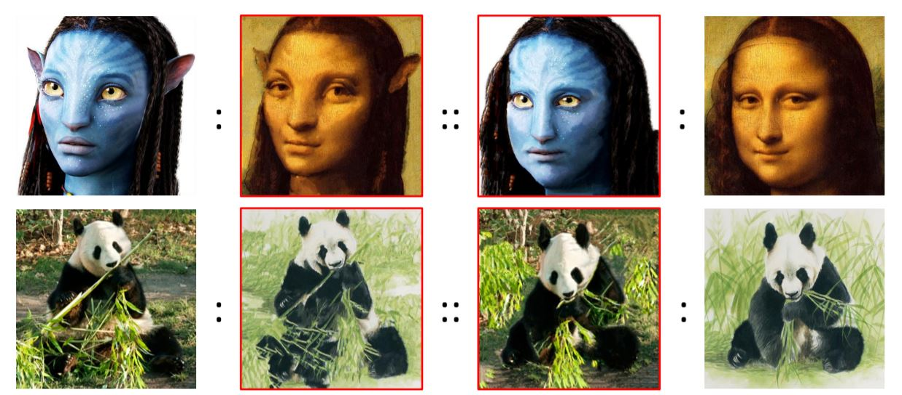
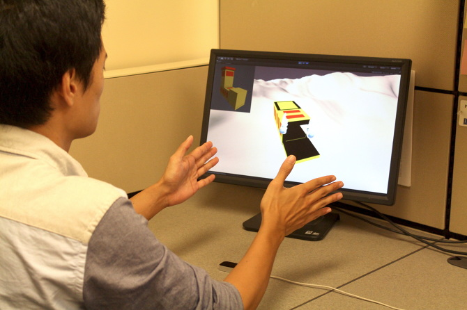
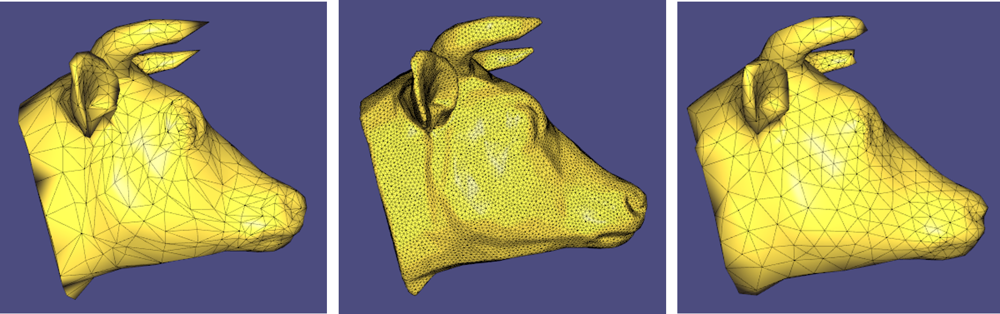
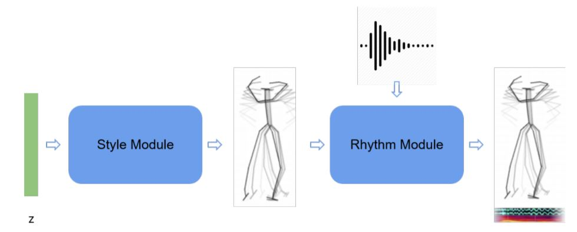
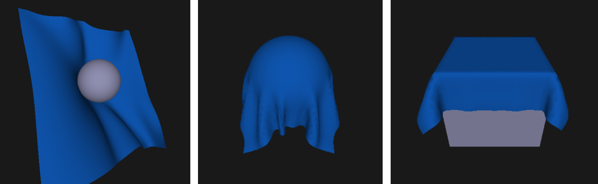
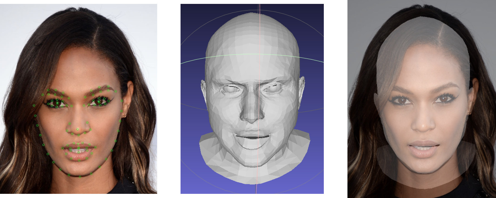

|
Yuan Yao 姚 远
Hi! I am a second-year Ph. D. student at University of British Columbia, working on Computer Graphics and Computer Vision. Welcome to my academic webpage!
Email /
CV /
Google Scholar /
LinkedIn
Bio
I entered into the world of Computer Graphics when I was just 3 years old by playing the game "Rayman". I also spent more than 10 years on Mathematics Olympiad and got many prizes. Therefore, Computer Science and Math are both my favorite subjects. Besides, I also love music, I can play guitar, piano, clarinet and sing. I wish I can finally bring techniques to the arts.
I got my bachelor degree in computer science from Shanghai Jiao Tong University, during which I spent two months studying in University of California, Los Angeles and three months doing research in University of Illinois Urbana-Champaign. Besides, I also fortunately interned at Unity Technologies, Microsoft Research Asia and Megvii Research. You can check my CV for more details.
|
|
|
Research
My research interest lies on the intersection of Computer Graphics and Computer Vision. More specifically, I am now actively working on 3D Vision, Geometry Processing and Physics-based Simulation. Previously I worked on Computational Photography and Virtual Reality. I always have many interesting ideas in different topics, feel free to check out my works or reach out for collaboration(even just a discussion).
I am co-supervised by Prof. Alla Sheffer and Prof. Leonid Sigal, and also working closely with Prof. Helge Rhodin.
|
|
|
Front2Back: Single View 3D Shape Reconstruction via Front to Back Prediction
Yuan Yao, Nico Schetler, Enrique Rosales, Helge Rhodin, Leonid Sigal, Alla Sheffer
CVPR 2020
preprint
An explicit single-view 3D reconstruction method by estimating back view 2.5D maps from front view.
|
|

|
Visual Attributes Transfer via Deep Image Analogy
Jing Liao, Yuan Yao, Lu Yuan, Gang Hua, Sing Bing Kang
SIGGRAPH 2017
paper |
codes
A non-parametric algorithm for neural style transfer.
|
|

|
A Gestural Interface for Practicing Children's Spatial Skills
Yuan Yao, Po-Tsung Chiu, Wai-Tat Fu
IUI 2017 (poster)
paper
A virtual gestural interface developed using Leap Motion.
|
|
Course Projects
Here are some course projects during my graduate study, I also did a lot of fun projects in my undergrad, check here.
|
|

|
Adaptive Feature-Preserving Remeshing
CPSC 524 - Computer Graphics: Modeling
report
|
code
An isotropic remeshing algorithm which allows adaptive edge length and preserve features. The codes were written based on libigl.
|
|

|
Music-Aligned Dance Sequence Generation
CPSC 532S - Multimodal Learning
report
We proposed a two-step music-aligned dance sequence generation method.
|
|

|
FEM-based Cloth Simulation
MATH 607E - Numerical Method for Differential Equation
Corotational Finite Element Method based Cloth Simulation using Linearly-Implicit time integration.
|
|

|
3D Face Reconstruction from Single-View Portrait
CPSC 532M - Machine Learning
A simple 3D face reconstruction method from single view image. We use the parametrized model "FLAME" and minimize the distance between 2D landmarks and projected 3D landmarks.
|
|
Codes
Here are a few other open source codes I wrote during learning/researching.
|
GPU version PatchMatch code
1D Multigrid Solver code
Min Max Modular SVM code
Web crawler based on Python and Phantom.js code
|